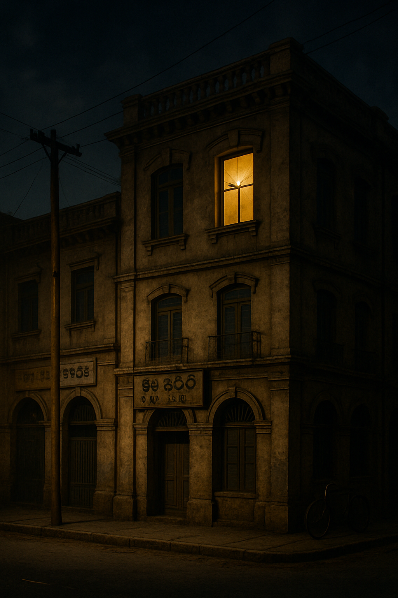

10:02 PM..
Bangalore’s summer night clung to an ageing apartment block — the kind that always smelt of curry leaves, damp cement, and someone’s ironing. From the service lane below, a lit third–floor window glowed against the dark.

Inside, voices rose — sharp, overlapping, urgent. A sudden pause. The scrape of something heavy. Footsteps in frantic motion.
Then it came — a single, thunder–crack GUNSHOT splitting the air.
A gasp. A scream. And, as if the city itself recoiled, the window went black.